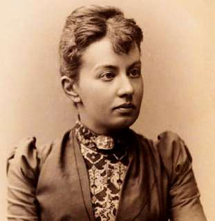

Борис Акунин
Мой календарь
Софья Ковалевская - великий математик и вообще во всех отношениях выдающаяся личность. Прорваться на научный олимп во времена, когда к женщинам относились как к людям второго сорта и мешали им получить высшее образование, - было огромным свершением.
Софья Васильевна сделала несколько важных открытий и наверняка добилась бы в науке гораздо большего, если бы не умерла всего в сорок лет.
В математике я совсем ничего не смыслю, но, когда впервые прочитал про то, как умерла Ковалевская, очень расстроился и на всю жизнь запомнил эту историю. Она поучительная.
Дело было так.
Профессор Ковалевская возвращалась домой в Стокгольм (преподавала там в университете). Узнала, что в Дании, через которую следовал поезд, свирепствует оспа. Испугалась заразиться и решила поехать кружным маршрутом. Место можно было добыть только в открытом экипаже. В этой безумной для зимнего времени поездке Софья Васильевна заработала воспаление легких и умерла. Это произошло 10 февраля 1891 года.
Страх - плохой советчик. Можно так сильно испугаться одной опасности, что вляпаешься в другую.
Вот чему научила меня Софья Ковалевская, а вовсе не тому, что некоторые абелевы интегралы третьего ранга могут быть приведены к эллиптическим интегралам.